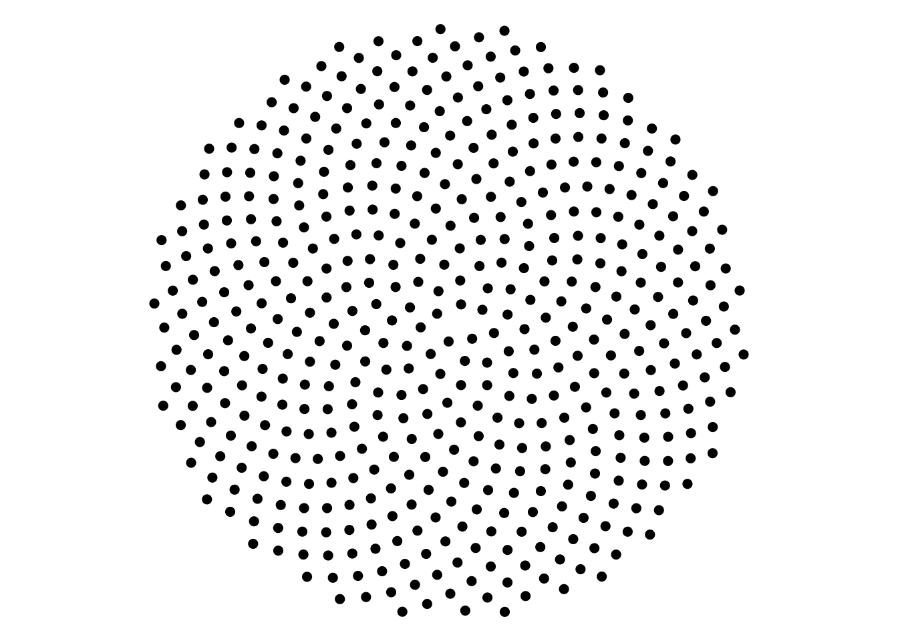
I really only wanted to spill some fountain pen ink. Not literally. That would be expensive. 🖋️
I wanted to take colours inspired by Pilot’s Iroshizuku fountain pen inks, drop them somewhere on a blank canvas, and let them flow.
That led me to flow fields.
First: where do I drop the ink?
Before worrying about how anything moves, I need some starting points.
For that, I went back to an old favourite: phyllotaxis - the mathematical arrangement associated with sunflower seeds and other plant structures.
The important part is the golden angle - about 137.5^.
Each new point rotates by that angle and moves a little farther from the center.
\[ \alpha = \pi(3-\sqrt{5}) \approx 137.5^\circ \]
This gives me a deterministic set of locations.
No flow yet. Just places where I can drop particles.
What is a flow field?
This was the part I initially made much more complicated in my head than it needed to be. A flow field is simply a rule:
At position
(x, y), which direction should I go?
For example, this field:
field_vortex <- function(x, y) {
atan2(y, x) + pi / 2
}returns a direction perpendicular to the line from the origin.
I like thinking of the field as an invisible landscape.
The landscape doesn’t draw anything itself.
I have to drop something into it.
💧
The walker
A particle begins at (x0, y0).
At every step it:
- asks the field which direction it should travel,
- converts that angle into horizontal and vertical movement,
- takes one tiny step,
- asks again.
The important bit of the walker is essentially:
angle <- field(x, y)
x_new <- x + cos(angle) * step_size
y_new <- y + sin(angle) * step_sizecos(angle) gives the horizontal component of the movement. sin(angle) gives the vertical component.
And step_size determines how far the particle moves each time. So a curve isn’t actually being drawn. I’m recording the history of a moving particle. That distinction finally made flow fields click for me.
Drop the Iroshizuku ink and let it flow
Now I can combine the two ideas. Phyllotaxis decides where the particles are born. The flow field decides what happens to them afterward.
Spiral
Pulls the paths around the centre while gradually drifting outward — a bit like ink swirling outward as you stir a cup
Code
spiral_paths <- make_flow_paths(
field = field_spiral, # rule that determines which direction each particle moves
n = 500, # number of particles dropped into the field
n_steps = 220, # how many steps each particle takes = like how LONG it keeps walking
step_size = 0.006 # distance travelled with each step = how FAR it moves each time
)
plot_flow_paths(
spiral_paths,
linewidth = 0.9, # thickness of each particle trail
alpha = 0.6 # transparency: lower = more see-through
)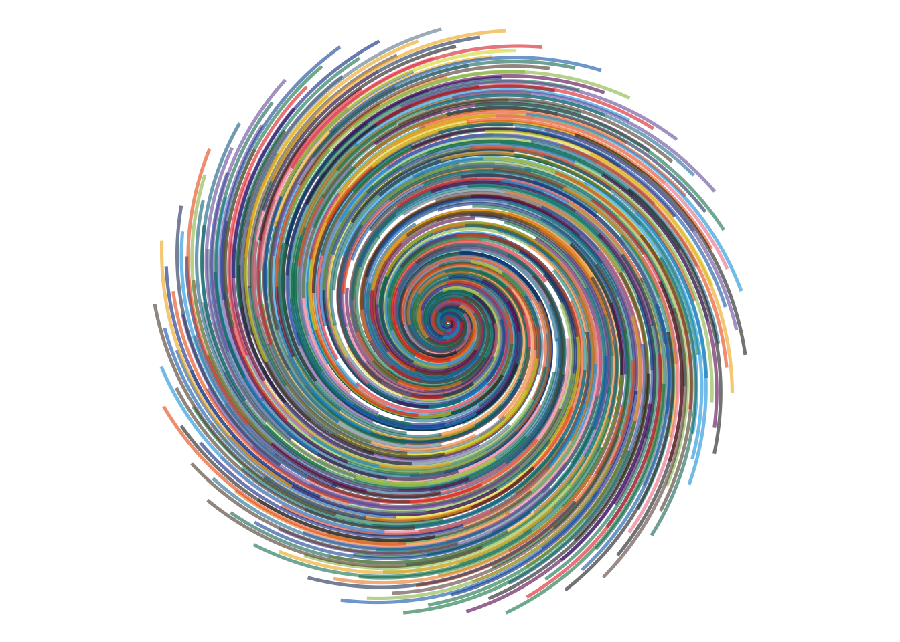
Same birth pattern. Different laws of physics.
Change the field, change the world
Here’s the part I find addictive.
I don’t need to rewrite the walker.
I can just give it a different function.
The starting geometry stays the same.
The walking process stays the same.
Only the field changes — and with it, the entire world the particles move through.
Radial fields
These fields are all centered around the origin, but they guide the particles in different ways: circling, spiralling, moving outward, or pulling inward.
Pulls the paths into circular motion — a bit like star trails in a long-exposure photograph.
Code
draw_flow_field(
field = field_vortex, # circular motion around the centre
n = 500, # lower = sparser star trails; higher = denser sky
n_steps = 220, # lower = shorter trails, like ending the exposure early
step_size = 0.006, # lower = smoother, tighter curves; higher = bigger jumps
linewidth = 1.2, # lower = finer light trails; higher = bolder streaks
alpha = 0.6 # lower = softer/fainter trails; higher = more opaque
)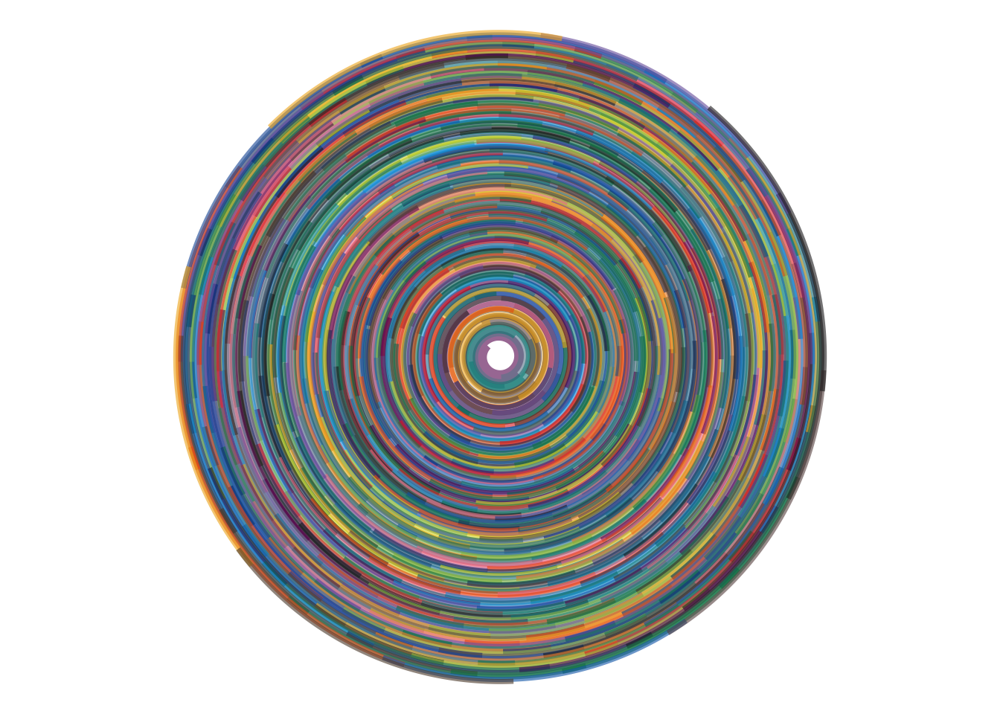
Pulls the paths around the centre while gradually drifting outward — a bit like ink swirling outward as you stir a cup.
Code
draw_flow_field(
field = field_spiral, # circular motion with a gentle outward drift
n = 500, # lower = fewer ink trails; higher = denser layering
n_steps = 220, # lower = shorter spirals; higher = longer outward journeys
step_size = 0.006, # lower = smoother spirals; higher = bigger jumps through the field
linewidth = 0.9, # lower = finer strands; higher = thicker ink strokes
alpha = 0.6 # lower = softer layering; higher = stronger overlap
)
Pushes the paths away from the centre, like sparks or ink flung outward from a single point.
Code
draw_flow_field(
field = field_outward, # motion directly away from the centre
n = 500, # lower = fewer outward traces; higher = denser burst
n_steps = 120, # lower = shorter bursts; higher = longer radiating paths
step_size = 0.01, # lower = smoother expansion; higher = more dramatic outward jumps
linewidth = 0.8, # lower = finer streaks; higher = bolder marks
alpha = 0.6 # lower = softer trails; higher = stronger opacity
)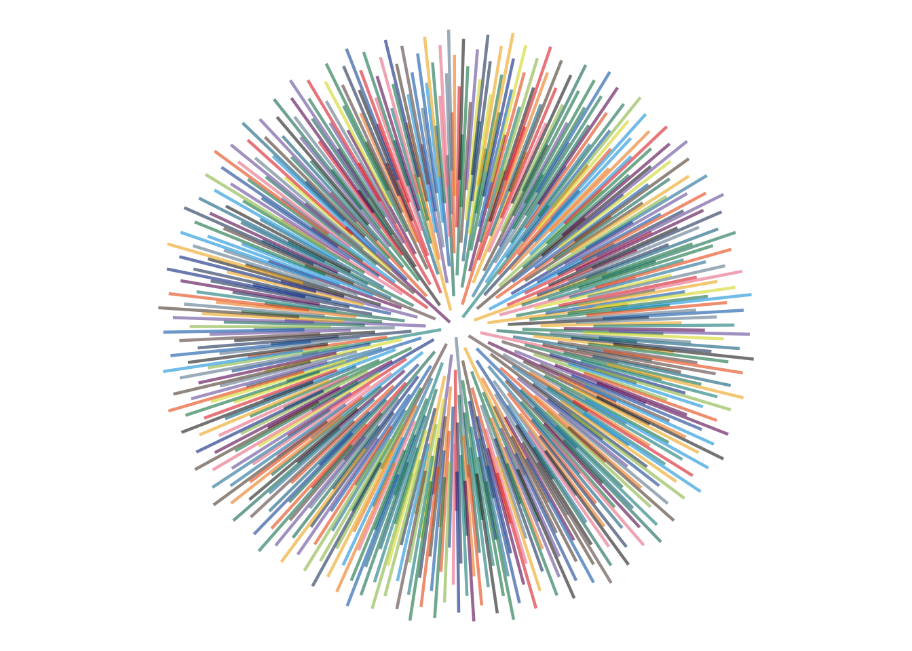
Draws the paths back toward the centre, like everything on the page is being gently pulled inward.
Code
draw_flow_field(
field = field_inward, # motion directly toward the centre
n = 500, # lower = fewer inward traces; higher = denser convergence
n_steps = 120, # lower = shorter inward motion; higher = longer collapsing paths
step_size = 0.01, # lower = smoother inward pull; higher = more abrupt movement
linewidth = 0.8, # lower = finer threads; higher = heavier strokes
alpha = 0.6 # lower = softer layering; higher = stronger overlap near the centre
)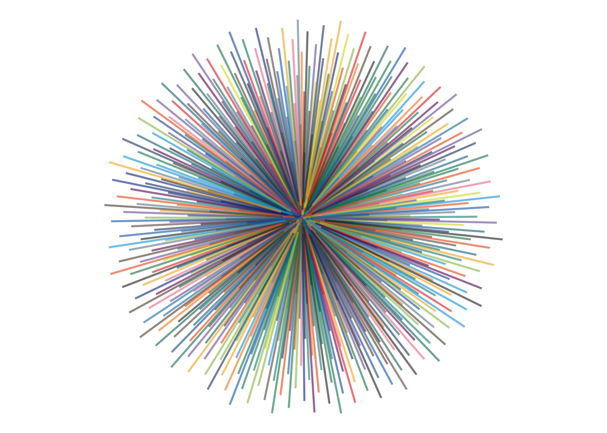
Wave fields
These fields are less about the centre and more about movement across the page: swaying, slanting, colliding, and rippling.
Bends the paths back and forth, like loose strands of seaweed drifting with the current.
Code
draw_flow_field(
field = field_wavy, # back-and-forth motion, like seaweed drifting in a current
n = 500, # lower = fewer strands; higher = a fuller, more tangled flow
n_steps = 150, # lower = shorter strands; higher = longer, more continuous sweeps
step_size = 0.01, # lower = smoother bends; higher = looser, more exaggerated movement
linewidth = 2, # lower = finer strands; higher = thicker, more painterly strokes
alpha = 0.7 # lower = lighter layering; higher = stronger overlapping colour
)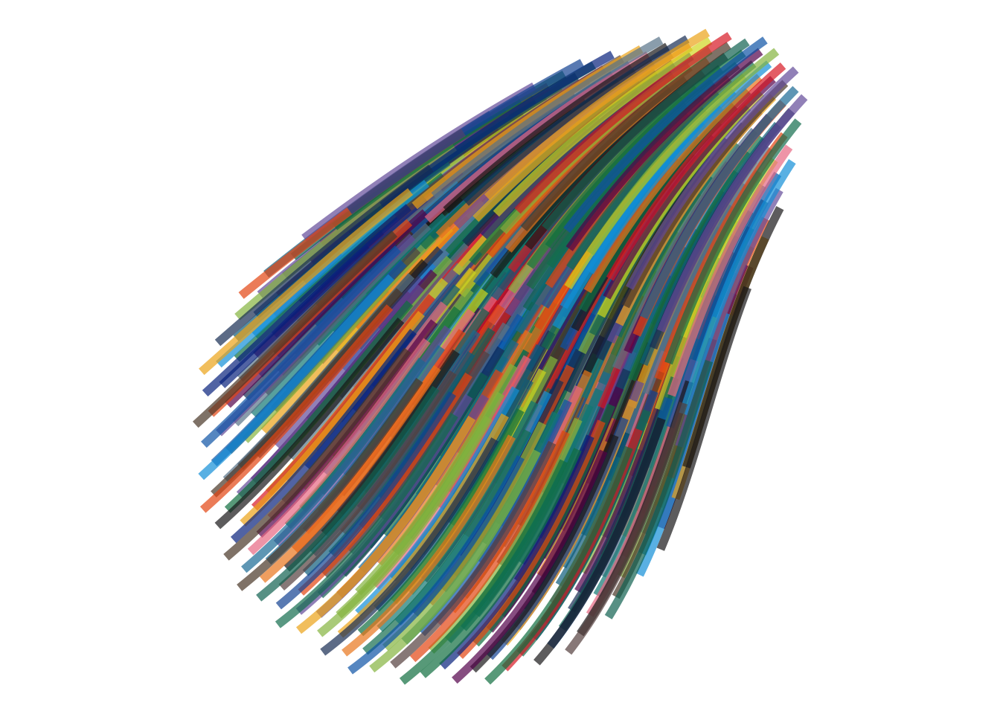
Nudges the paths along a slanted current, as if a breeze were pushing them diagonally across the page.
Code
draw_flow_field(
field = field_diagonal, # slanted wave-like motion across the page
n = 500, # lower = fewer paths; higher = denser layering
n_steps = 125, # lower = shorter marks; higher = longer, more continuous paths
step_size = 0.01, # lower = smoother motion; higher = larger jumps
linewidth = 1, # lower = finer strands; higher = thicker strokes
alpha = 0.7 # lower = lighter layering; higher = stronger overlap
)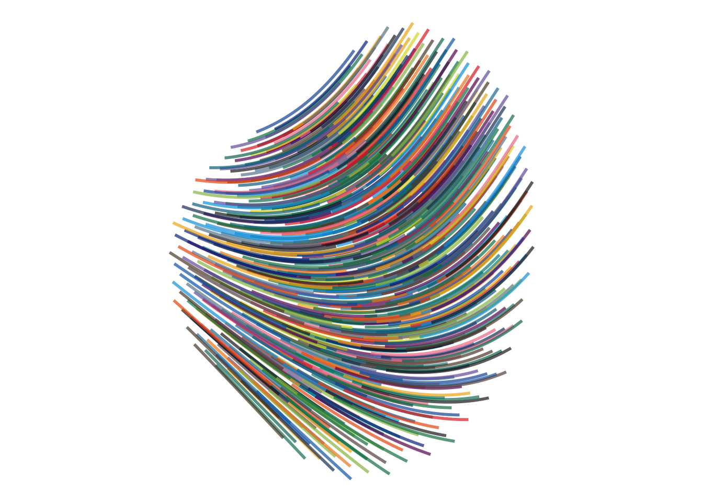
Lets crossing wave patterns push against each other, creating a more tangled, woven motion.
Code
draw_flow_field(
field = field_interference, # crossing wave patterns, like ripples meeting on water
n = 500, # lower = more open crossings; higher = denser woven structure
n_steps = 250, # lower = shorter fragments; higher = longer interlaced paths
step_size = 0.005, # lower = finer, smoother weaving; higher = more abrupt directional changes
linewidth = 0.5, # lower = delicate threads; higher = heavier woven strokes
alpha = 0.6 # lower = softer overlaps; higher = stronger visual interference
)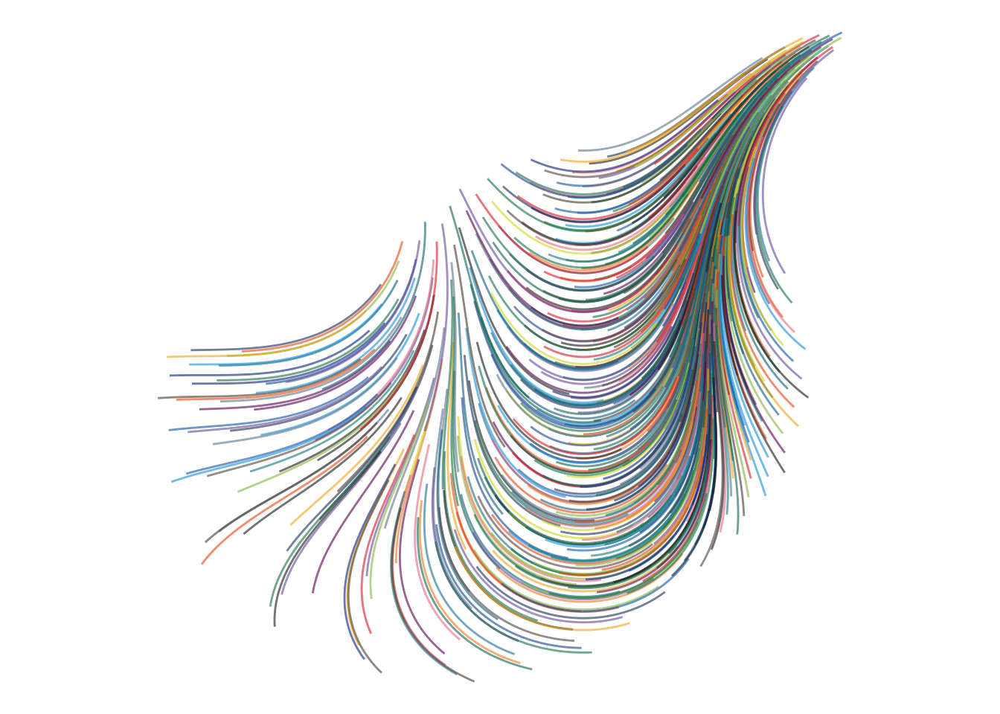
Pushes the paths through expanding rings, a bit like ripples spreading outward across water.
Code
draw_flow_field(
field = field_ripple, # radial wave motion, like ripples spreading across water
n = 500, # lower = fewer visible ripple traces; higher = denser layering
n_steps = 180, # lower = shorter paths; higher = longer ripple-following trails
step_size = 0.008, # lower = smoother ripples; higher = more exaggerated movement
linewidth = 0.8, # lower = finer rings; higher = bolder ripple marks
alpha = 0.6 # lower = softer layering; higher = stronger overlap
)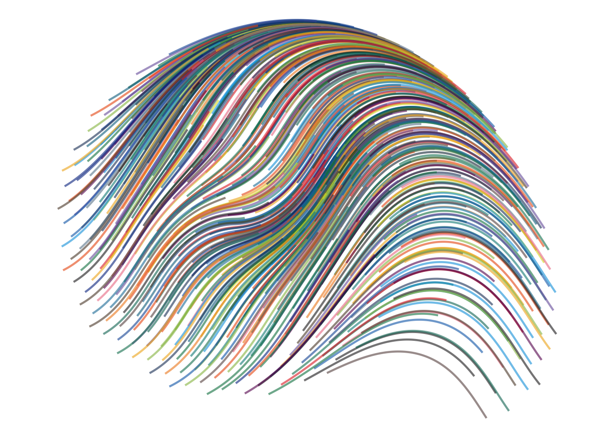
The particles themselves have not changed.
The walker has not changed.
Only the field has changed — and that is enough to make each world feel different.
How n changes the crowd
Before changing how far the particles travel, I can change something even simpler: how many particles I release into the field.
n controls the number of starting points.
The field does not change.
The walker does not change.
Each particle follows the same rules.
There are simply more — or fewer — travelers moving through the same world.
With a small n, the structure of the field feels sparse and exposed.
As n increases, the individual paths begin to overlap and the drawing becomes denser, richer, and more like a continuous texture.
Code
draw_flow_field(
field = field_vortex, # same circular field in every tab
n = 50, # very few particles = sparse, isolated trails
n_steps = 180, # fixed so journey length does not change
step_size = 0.006, # fixed so stride does not change
linewidth = 1.2, # fixed drawing style
alpha = 0.6 # fixed transparency
)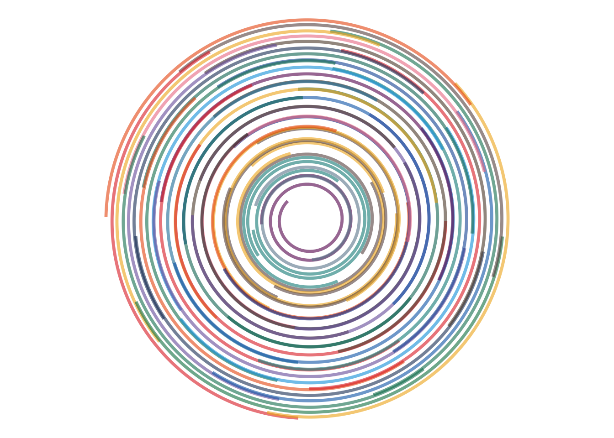
Code
draw_flow_field(
field = field_vortex, # same circular field in every tab
n = 100, # more particles = more of the field becomes visible
n_steps = 180, # fixed so journey length does not change
step_size = 0.006, # fixed so stride does not change
linewidth = 1.2, # fixed drawing style
alpha = 0.6 # fixed transparency
)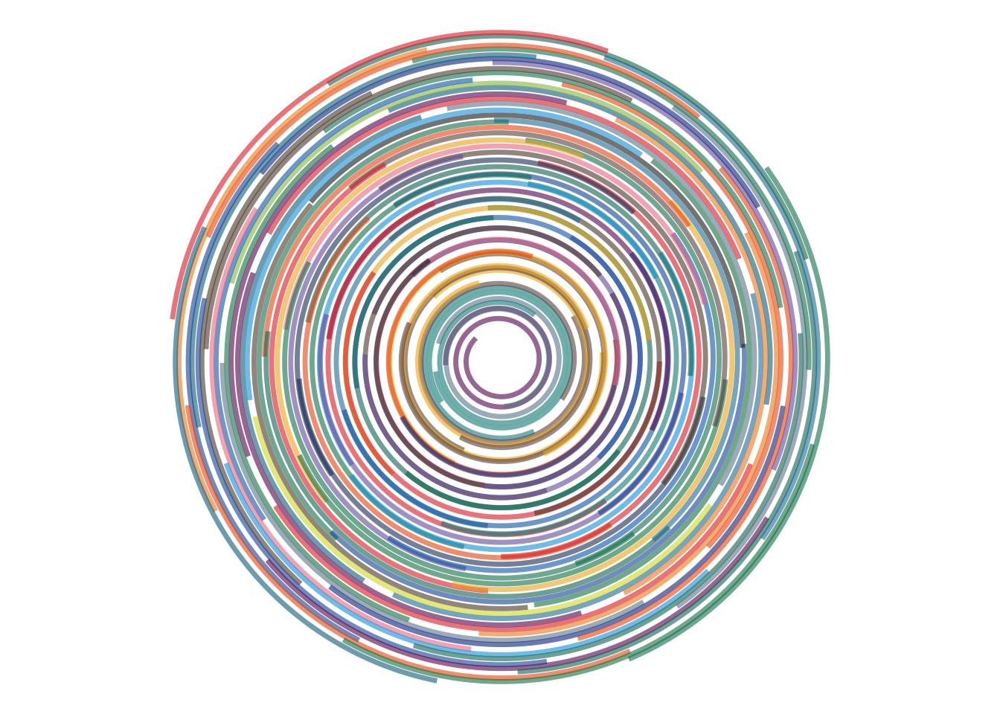
Code
draw_flow_field(
field = field_vortex, # same circular field in every tab
n = 250, # overlapping trails begin to create a fuller structure
n_steps = 180, # fixed so journey length does not change
step_size = 0.006, # fixed so stride does not change
linewidth = 1.2, # fixed drawing style
alpha = 0.6 # fixed transparency
)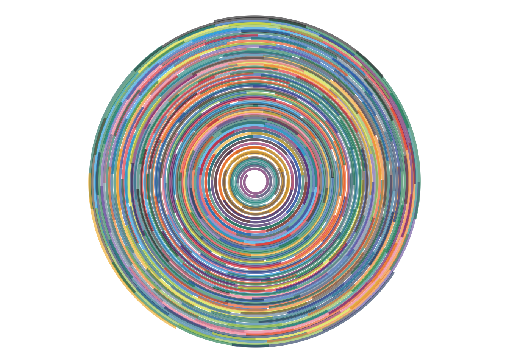
Code
draw_flow_field(
field = field_vortex, # same circular field in every tab
n = 500, # many particles = dense, layered star trails
n_steps = 180, # fixed so journey length does not change
step_size = 0.006, # fixed so stride does not change
linewidth = 1.2, # fixed drawing style
alpha = 0.6 # fixed transparency
)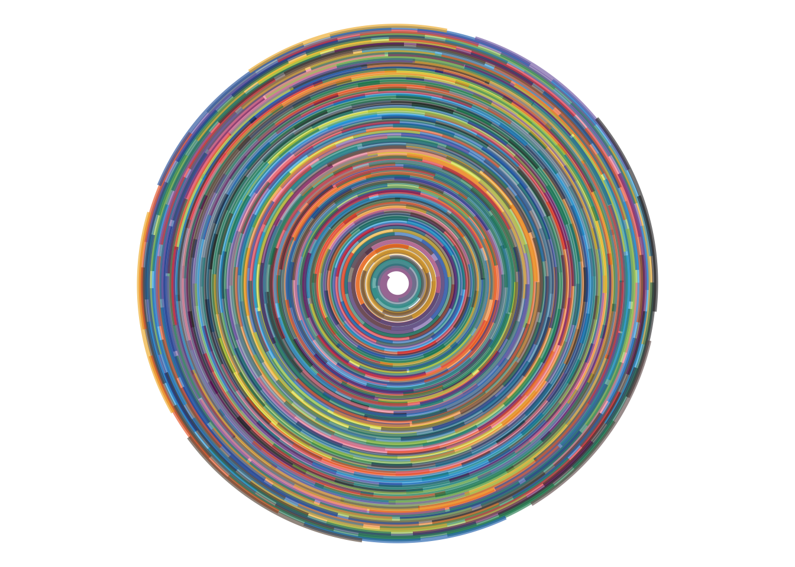
Changing n does not change the rules of motion. It changes how densely those rules are sampled.
A sparse field gives me individual paths.
A crowded field begins to reveal a texture.
How n_steps changes the journey
Keeping the same field and starting geometry, I varied only n_steps to see how the length of the journey changes the final drawing.
Code
draw_flow_field(
field = field_diagonal, # slanted wave-like motion across the page
n = 500, # lower = fewer paths; higher = denser layering
n_steps = 5, # very short paths
step_size = 0.01, # lower = smoother motion; higher = larger jumps
linewidth = 2, # lower = finer strands; higher = thicker strokes
alpha = 0.7 # lower = lighter layering; higher = stronger overlap
)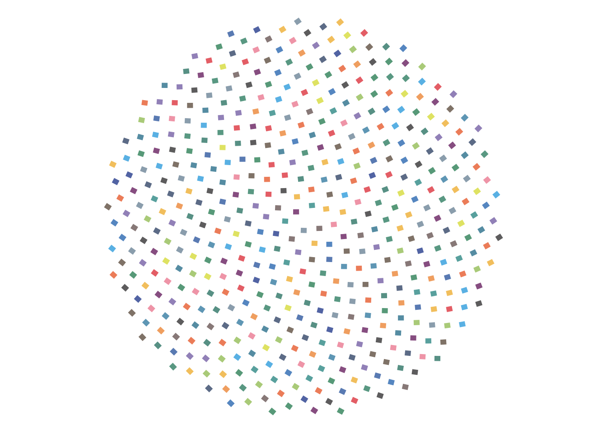
Code
draw_flow_field(
field = field_diagonal, # slanted wave-like motion across the page
n = 500, # lower = fewer paths; higher = denser layering
n_steps = 25, # medium-length paths
step_size = 0.01, # lower = smoother motion; higher = larger jumps
linewidth = 2, # lower = finer strands; higher = thicker strokes
alpha = 0.7 # lower = lighter layering; higher = stronger overlap
)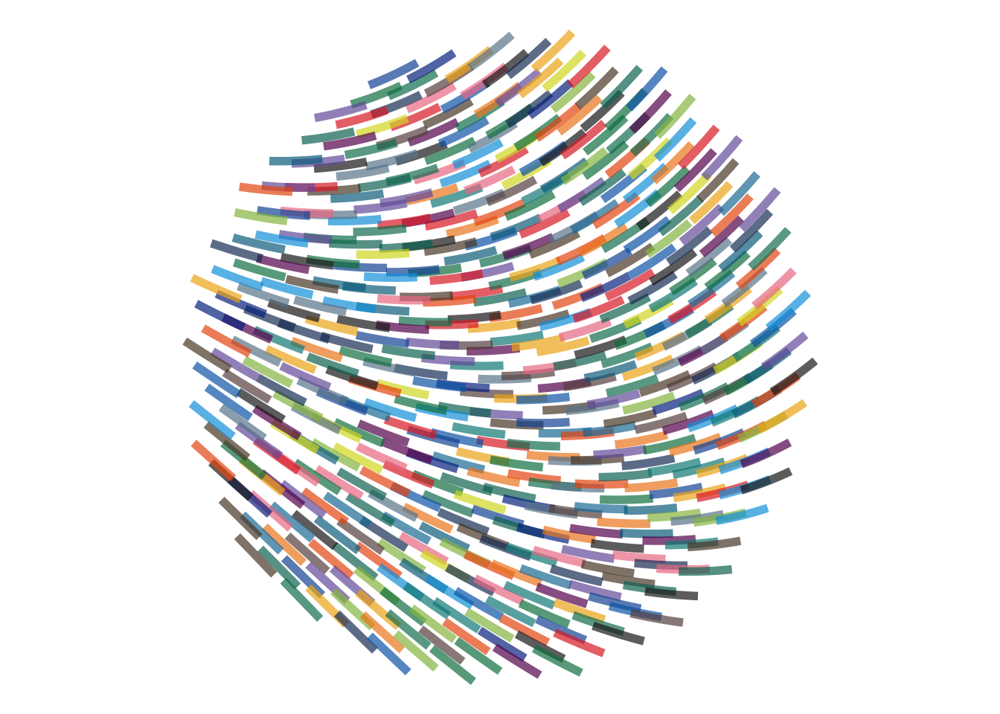
Code
draw_flow_field(
field = field_diagonal, # slanted wave-like motion across the page
n = 500, # lower = fewer paths; higher = denser layering
n_steps = 125, # long flowing paths
step_size = 0.01, # lower = smoother motion; higher = larger jumps
linewidth = 2, # lower = finer strands; higher = thicker strokes
alpha = 0.7 # lower = lighter layering; higher = stronger overlap
)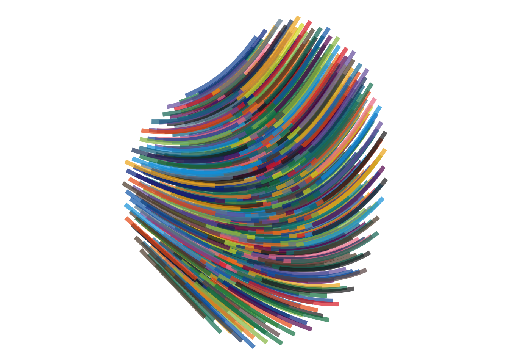
Code
draw_flow_field(
field = field_diagonal, # slanted wave-like motion across the page
n = 500, # lower = fewer paths; higher = denser layering
n_steps = 250, # long flowing paths
step_size = 0.01, # lower = smoother motion; higher = larger jumps
linewidth = 2, # lower = finer strands; higher = thicker strokes
alpha = 0.7 # lower = lighter layering; higher = stronger overlap
)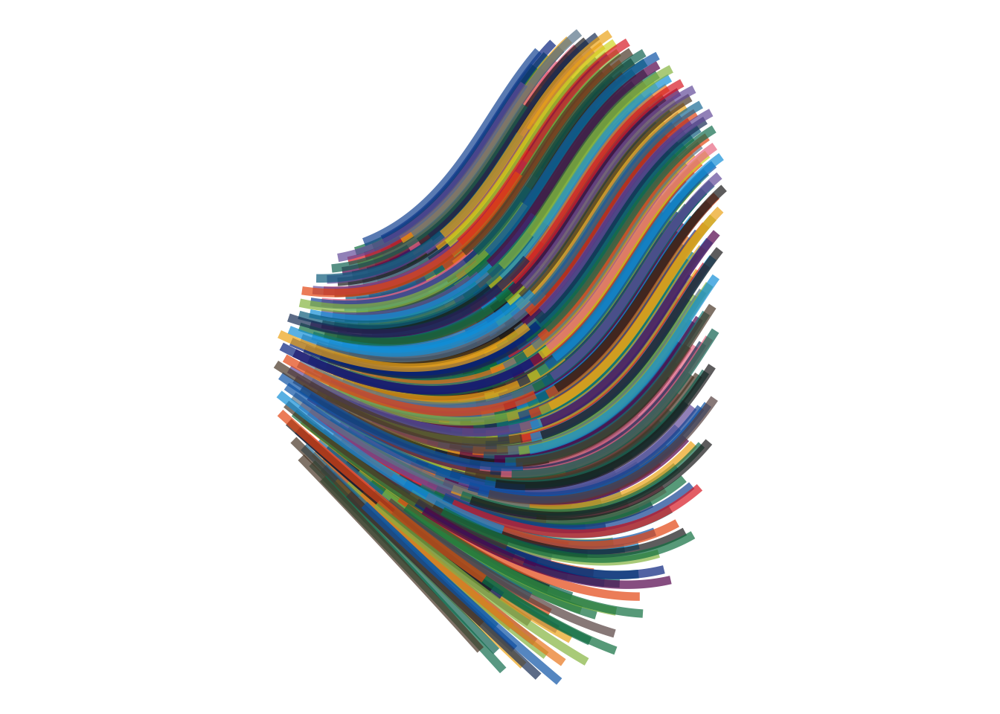
How step_size changes the stride
If n_steps controls how long the journey lasts, step_size controls the particle’s stride.
Here I kept the field, particle count, number of steps, and drawing style the same, and changed only step_size. Smaller values trace the field more delicately, while larger values move farther at each step and exaggerate the motion.
Code
draw_flow_field(
field = field_spiral, # circular motion with a gentle outward drift
n = 500, # lower = fewer ink trails; higher = denser layering
n_steps = 50, # fixed here so only step_size changes
step_size = 0.001, # tiny stride = very fine, tightly sampled motion
linewidth = 0.8, # lower = finer strands; higher = thicker ink strokes
alpha = 0.7 # lower = softer layering; higher = stronger overlap
)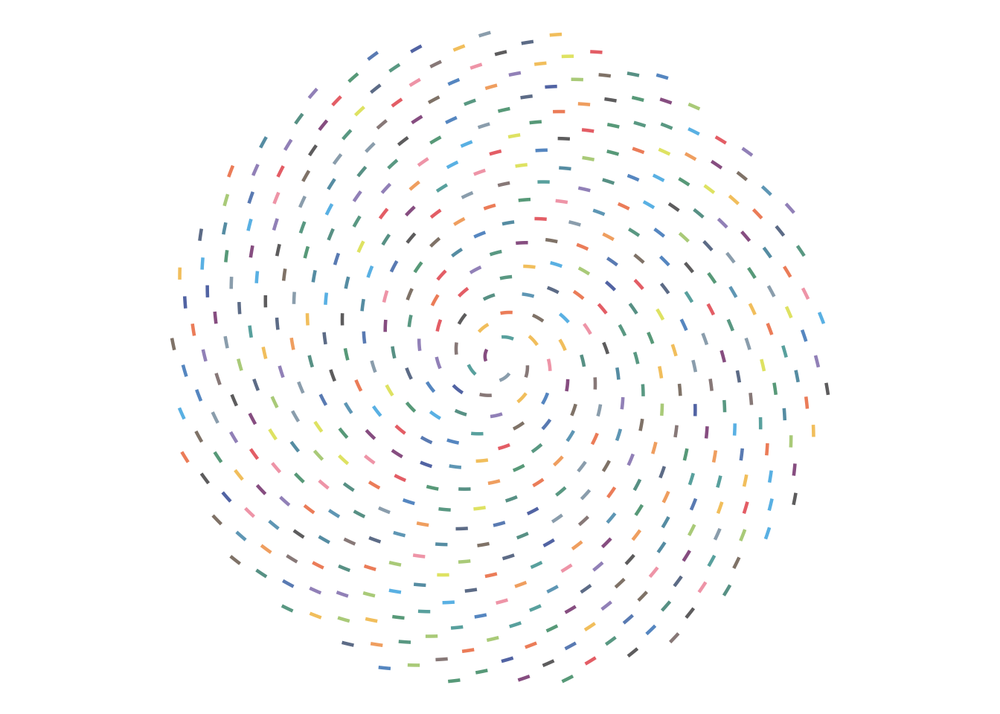
Code
draw_flow_field(
field = field_spiral, # circular motion with a gentle outward drift
n = 500, # lower = fewer ink trails; higher = denser layering
n_steps = 50, # fixed here so only step_size changes
step_size = 0.01, # medium stride = balanced between smoothness and movement
linewidth = 0.8, # lower = finer strands; higher = thicker ink strokes
alpha = 0.7 # lower = softer layering; higher = stronger overlap
)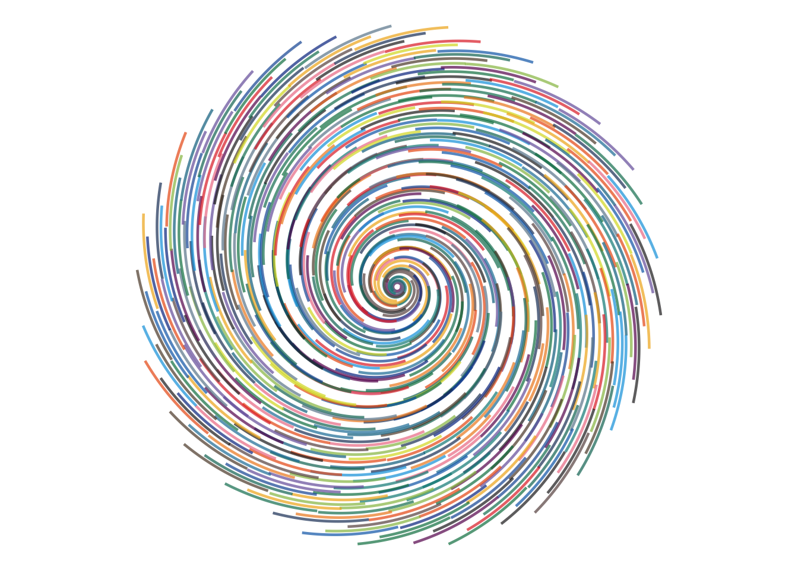
Code
draw_flow_field(
field = field_spiral, # circular motion with a gentle outward drift
n = 500, # lower = fewer ink trails; higher = denser layering
n_steps = 50, # fixed here so only step_size changes
step_size = 0.08, # large stride = exaggerated jumps through the field
linewidth = 0.8, # lower = finer strands; higher = thicker ink strokes
alpha = 0.7 # lower = softer layering; higher = stronger overlap
)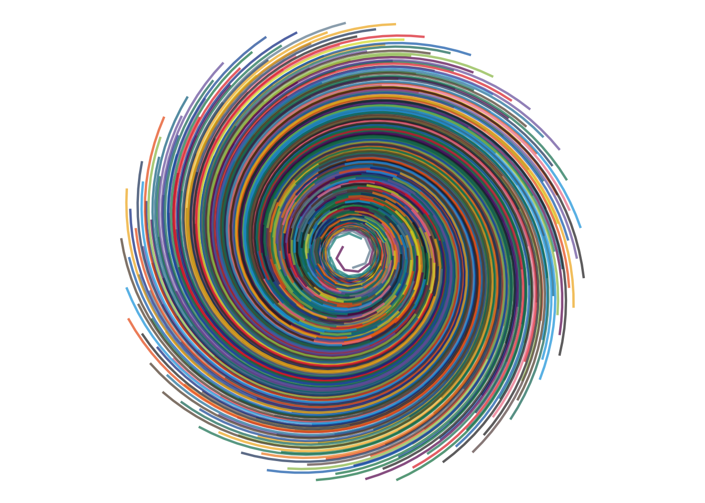
Code
draw_flow_field(
field = field_spiral, # circular motion with a gentle outward drift
n = 500, # lower = fewer ink trails; higher = denser layering
n_steps = 50, # fixed here so only step_size changes
step_size = 4, # large stride = exaggerated jumps through the field
linewidth = 0.8, # lower = finer strands; higher = thicker ink strokes
alpha = 0.7 # lower = softer layering; higher = stronger overlap
)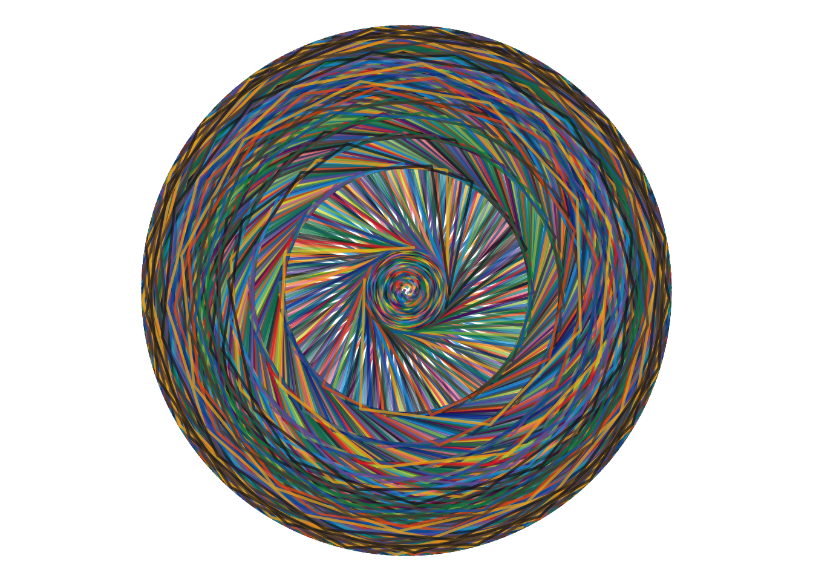
With the same journey length, changing only the stride makes the paths feel very different. Small steps hug the field more closely, while larger steps produce bolder, looser motion.
A tiny system
What started as “I want to spill some ink” turned into a surprisingly useful little programming lesson.
The system now has three independent ideas:
STARTING POINTS
↓
particles
↓
FLOW FIELD
↓
direction
↓
WALKER
↓
pathsThe starting geometry answers:
Where do you begin?
The field answers:
Given where you are, which direction should you go?
And the walker answers:
How do you move through that field — how long is the journey, and how big is each step?
Once those responsibilities are separated, I can change one without rewriting the others.
Which means there are now far too many things I want to try. 😬
Different starting geometries. Different mathematical fields. Noise. Curl.
Maybe even particles that pay attention to each other instead of only listening to the environment.
But that’s for another ink spill.